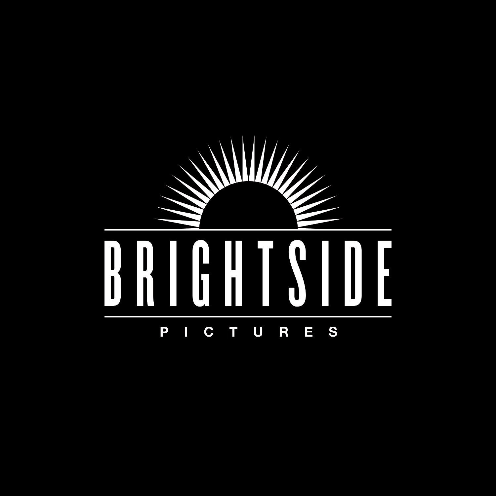

Vælg først en lokal mappe. Appen bygger et overskueligt KESSLER-arkiv og gemmer både referencer, manus, prompts, renderinger og Final-filer dér.
Der oprettes en KESSLER-mappe på den placering, du vælger.
Åbn Terminal, indsæt kommandoen og tryk Retur.
xattr -dr com.apple.quarantine "/Applications/Brightside Film Remote.app"
Dit Higgsfield-password deles aldrig i installationsfilen.
Astra og Claude foreslår hver en løsning. Astra samler svarene og styrer Higgsfield. Claude læser opgaven og projektets tekstkontekst, ikke selve referencefilmene.
Claude er ikke forbundet endnu.
Når parløb er slået til, sendes din opgave og projektets tekstkontekst til både OpenAI og Anthropic. Begge API’er afregnes efter forbrug. Nøglerne gemmes krypteret på denne Mac.
Nøglen krypteres lokalt på denne Mac. Higgsfield-login bliver i appens lokale browserprofil.